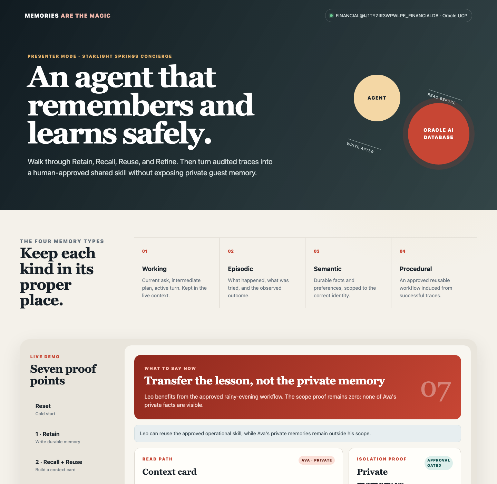

Oracle AI Database · AI agent memory · Continual learning
Memories Are the Magic: Build Governed AI Agent Memory with Oracle AI Database and Java
Develop agents with working, episodic, semantic, and procedural memory; Retain, Recall, Reuse, and Refine; lifecycle controls; and human-approved learning on Oracle AI Database.
By Paul Parkinson · Updated July 30, 2026
An AI agent does not become stateful because its model has a long context window. It becomes stateful when useful experience is deliberately captured, scoped, recalled, corrected, expired, and reused. This demo makes that external memory loop visible: read before the turn, write after the turn, and keep Oracle AI Database as the durable, transactional governance boundary.
The included concierge for the fictional Flynn's Theme Park remembers visitor Ava's accessibility needs and preferences, builds a scoped context card, corrects a bad extracted fact, expires a temporary route closure, and turns repeated successful traces into a human-approved reusable skill. A second visitor can use that shared skill without seeing Ava's private data.
The model reasons in the loop; the external memory substrate makes experience durable, scoped, correctable, and auditable.
Java walkthrough: run every scenario action, inspect the relevant source, and verify each database transition. The video is silent so a presenter can narrate it live; burned-in captions and the downloadable SRT caption file contain the complete explanation.
Key Takeaways
An agent is a loop with state. Durable memory is an external computational substrate, not a property of a single prompt.
Memory engineering adds writes, correction, scope, retention, and governance to retrieval. Read-only retrieval is RAG; read plus write becomes a memory lifecycle.
Continual learning can begin in token space: retrieve better context, induce structured skills, and require approval before reuse. Model-weight updates are a later option, not the default.
The Java reference combines a live ojdbc-agent-memory path with a repeatable Java and SQL teaching path for correction, TTL, traces, approval, and privacy-safe reuse.
Flynn's Theme Park Scenario at a Glance
This sequence is the shortest presenter runbook for the application. The first two visitor interactions exercise the Java memory library directly. The remaining actions use fixed Java and SQL operations against application-owned AIM_DEMO_* tables. “Repeatable teaching path” means those actions produce the same inspectable transitions during every presentation instead of asking an LLM to improvise them. They are real database transactions, but they are demonstration code rather than hidden behavior inside the memory library.
Scenario event and observed behavior
Java memory-core action
Oracle AI Database action
Memory principle shown
0. Reset both paths. Library memory becomes empty; only Ava and Leo remain in the lifecycle path.
OracleAgentMemory.clearAll() resets the library path. MemoryRepository.reset() resets the lifecycle path.
External state and isolation. The empty UI proves that browser state is not carrying memory between runs.
1. Retain Ava's current conversation and one seeded prior episode. The UI shows two messages, extracted preferences and guidelines, and the explicit covered-atrium memory.
addMessages() retains the current conversation and lets Ollama extract reusable facts and guidelines. addMemory() inserts the simulated prior-visit outcome so the demo can distinguish current conversation extraction from episodic history.
Inserts two rows into OAMJ_CONCIERGE_MESSAGE. Inserts extracted and explicit records into OAMJ_CONCIERGE_RECORDS; each insert calls VECTOR_EMBEDDING(allminilm USING ... AS DATA) to store a 384-dimensional native VECTOR.
Retain and write after. Semantic memory captures durable preferences; episodic memory captures what happened and whether it worked. The seeded rainy-visit episode is supplied as prior experience, not inferred from Ava's current sentence.
2. Recall a scoped plan for Ava. The context card includes her records and recent messages; the Leo scope check returns zero Ava records.
search() applies exact Ava, concierge-agent, and thread scope, then getContextCard() combines durable records with recent messages for the next model turn. The corresponding lifecycle walkthrough action uses MemoryRepository.recall() to expose an explicit recall audit.
A common-table expression embeds the request with VECTOR_EMBEDDING. Oracle ranks scoped rows from OAMJ_CONCIERGE_RECORDS with cosine VECTOR_DISTANCE. Recent messages are read from OAMJ_CONCIERGE_MESSAGE. The lifecycle action inserts one evidence row per selected memory into AIM_DEMO_RECALL_AUDIT.
Recall, reuse, and read before. Structured identity scope limits what may be considered before vector similarity decides relevance, while the audit shows why each record entered context.
3. Correct a remembered fact. Ava confirms lantern show, not fireworks; version 1 becomes superseded and version 2 becomes active.
MemoryRepository.correct() versions the visitor-confirmed fact inside one JDBC transaction.
Inserts version 2 into AIM_DEMO_MEMORIES, then updates version 1 to SUPERSEDED and sets SUPERSEDED_BY to the new MEMORY_ID.
Refine and correct. The agent uses the confirmed value on later turns while retaining an auditable history of what was wrong.
4. Expire a temporary closure. The row remains auditable but no longer enters future context.
expireOperationalMemory() closes the temporary operational record rather than deleting it.
Updates the matching row in AIM_DEMO_MEMORIES to STATUS='EXPIRED' and EXPIRES_AT=SYSTIMESTAMP. Later recall selects only active, unexpired rows.
TTL and lifecycle management. A live closure is short-lived operational memory, unlike a durable accessibility preference.
5. Induce a skill from three successful traces. Dream finds the repeated rainy-reroute pattern and proposes a pending procedure.
retain() records three fixed, privacy-safe example outcomes. dream() counts the successful shared pattern and proposes the generalized rainy-evening-reroute procedure.
Inserts the three evidence rows into AIM_DEMO_TRACES. After finding three successful RAINY_EVENING_REROUTE rows, inserts one PENDING procedure with generalized JSON instructions into AIM_DEMO_SKILLS.
Episodic learning material becomes candidate procedural memory. Continual learning here means changing future retrieved instructions, not retraining model weights.
6. Approve the candidate procedure. The UI shows its generalized, privacy-safe steps as approved.
approveSkill() activates the reviewed procedure for later visitors.
Updates AIM_DEMO_SKILLS from PENDING to APPROVED and records APPROVED_BY plus APPROVED_AT=SYSTIMESTAMP.
Human governance and provenance. A proposed lesson cannot enter the shared procedural-memory path until someone explicitly approves it.
7. Reuse the skill for Leo. Leo receives the general rainy-reroute procedure and zero of Ava's private memories.
nextDay() performs separate private-memory and approved-procedure reads. It reuses the generalized skill while keeping visitor-specific recall scoped to Leo.
Counts Ava rows in AIM_DEMO_MEMORIES under Leo's scope and returns zero. Separately selects only APPROVED rows from AIM_DEMO_SKILLS.
Safe procedural reuse without private-memory leakage. Leo benefits from the lesson learned across prior outcomes, not from Ava's personal history.
What the prior rainy-visit episode means: the blog and video refer to the same seeded demonstration record. It is not evidence that an earlier live app session occurred. When you click Retain Ava's conversation, AgentMemoryLibraryDemo.retain() calls addMemory() and inserts “The covered atrium route worked well during Ava's previous rainy visit” into OAMJ_CONCIERGE_RECORDS with RECORD_TYPE='memory'. The lifecycle lane separately inserts a comparable last-visit episodic row into AIM_DEMO_MEMORIES. The three de-identified rows in AIM_DEMO_TRACES are separate seeded examples used for skill induction.
Why Agents Forget
A stateless agent repeatedly re-onboards users, repeats failed approaches, and forgets what produced a good outcome. Trust cannot compound because experience disappears at the end of the call. A large prompt can postpone the problem, but it does not provide identity scope, correction, deletion, expiration, transaction boundaries, or a durable audit history.
An agent is still a loop: observe, plan, act, and evaluate. The model supplies reasoning inside that loop. External memory acts as a computational exocortex across loops, preserving selected facts and outcomes after the model invocation ends. The distinction matters because context-window contents are transient, while database records can have owners, versions, policies, and an audit trail.
Presenter thesis: “The durable competitive advantage is not one clever prompt. It is accumulated, governed experience that the right agent can recall at the right time.”
The Four Memory Types
Memory type
Question it answers
Demo example
Developer analogy
Lifecycle
Working
What am I doing now?
“Build Ava a rain-safe evening plan.”
RAM or the active context window.
Active turn; not inserted into the durable memory table.
Episodic
What happened before?
The indoor mobility route worked and the lantern show was the highlight.
Distilled interaction history.
Durable event plus outcome; useful learning material.
Semantic
What facts should I know?
Ava prefers a quiet breakfast and needs a minimal-stair route.
Project facts and conventions in CLAUDE.md or AGENTS.md.
Versioned, correctable, identity-scoped fact.
Procedural
How should I handle this pattern?
rainy-evening-reroute: “When rain closes a path, check accessibility, choose covered connectors, resequence dining, and verify arrival time.”
SKILL.md or agent skills, loaded through progressive disclosure.
Induced from successful traces; inactive until a person approves it.
These are analogies, not storage rules. A file such as CLAUDE.md or AGENTS.md can contain both semantic facts and procedural instructions; classify each entry by what it communicates and how the agent uses it.
These categories prevent a common design failure: treating every transcript fragment as equally durable. A live closure should expire; a confirmed accessibility preference can live longer; a reusable operational skill should contain the general lesson, not the original guest's private data.
How RECORD_TYPE Maps to Memory Types
The Java library and the conceptual memory model use related but different taxonomies. The four durable values written to OAMJ_CONCIERGE_RECORDS.RECORD_TYPE are preference, fact, guideline, and memory. They describe what the extractor persisted. Working, episodic, semantic, and procedural describe how the application uses and governs remembered information.
RECORD_TYPE
What it means in the Java library
Closest conceptual memory type
Flynn's Theme Park example
preference
A like, dislike, desired recommendation, dietary choice, or response-style preference.
Semantic memory. It is durable information about the visitor.
Ava prefers a quiet breakfast and short bullet-point itineraries.
fact
Stable factual state, such as a name, city, accessibility need, or other current visitor fact.
Semantic memory. The fact should be scoped, versioned, and correctable.
Ava needs routes with minimal stairs.
guideline
An instruction that the assistant should follow in future responses.
Procedural-like memory. It guides behavior, but an extracted visitor guideline is not automatically a globally approved skill.
Keep Ava's itineraries short and use bullet points.
memory
Durable context that does not fit the more specific preference, fact, or guideline categories.
Semantic or episodic memory, depending on content and provenance.
The covered atrium route worked well during Ava's previous rainy visit is episodic even though its stored record type is memory.
message record interface only
A conversation message returned when the library presents recent messages and durable records through one record interface. It is not a value persisted in OAMJ_CONCIERGE_RECORDS.RECORD_TYPE. Raw messages are stored in OAMJ_CONCIERGE_MESSAGE.
Recent or working context. A message is not durable semantic, episodic, or procedural memory unless extraction creates a separate record.
Ava's current request and the concierge response appear in the context card beside extracted records.
The extractor is instructed to prefer preference, fact, or guideline over the generic memory label. The demo searches the four durable types together. message is included only when recent conversation and durable records are presented through a common API.
Two important non-equivalences: working memory is not a durable RECORD_TYPE, and the approved shared procedure in AIM_DEMO_SKILLS is application-governed procedural memory rather than a library-extracted guideline. The OPERATIONAL value in AIM_DEMO_MEMORIES.MEMORY_TYPE is also application-specific and is not an ojdbc-agent-memory record type.
From Prompt Engineering to Memory Engineering
Prompt engineering shapes one turn.
Context engineering assembles evidence for one inference.
Memory engineering manages useful state across interactions.
The memory lifecycle is easiest to remember as the four Rs:
Retain: extract and store useful facts, episodes, and operational state.
Recall: search inside the correct user, agent, tenant, status, and time scope.
Reuse: assemble a compact context card for the next turn.
Refine: correct, consolidate, version, expire, or delete state.
Map the Four Rs to Java Methods
The Java API maps the first three Rs directly to OracleThread. Refinement is a lifecycle operation: the application combines the library's delete and add operations, or applies its own versioning transaction when correction history must be retained.
Why Refine is different: the current Java library API does not expose a single updateMemory(...) method. Its primitives support delete and add. This concierge demo uses MemoryRepository.correct() to create a new version and mark the prior AIM_DEMO_MEMORIES row SUPERSEDED, preserving an auditable history instead of overwriting it.
RAG versus memory: RAG retrieves existing knowledge. Agent memory includes the write-back and lifecycle that allow the system to change what it knows from later interactions. A production application often uses both.
What the Demo Actually Implements
Java browser presentation UI
│
├── Live library lane
│ ojdbc-agent-memory · Ollama extraction
│ in-database ALLMINILM vector embeddings
│ scoped semantic search · context cards
│
└── Repeatable lifecycle teaching path
visible SQL lifecycle · versions · audit
traces · approval-gated procedural memory
│
▼
Oracle AI Database
├── durable, identity-scoped memory
├── AI Vector Search in the live Java library lane
├── relational lifecycle and JSON metadata
└── correction, expiry, trace, and approval evidence
The agent loop reads governed memory while assembling context and writes selected messages, memories, traces, and outcomes after acting. Oracle AI Database provides the durable boundary around otherwise transient model execution.
Java: live memory library
The ojdbc-agent-memory lane persists messages, asks Ollama to extract typed records, creates vectors with the database-resident ALLMINILM model, performs identity-scoped semantic search, and builds a context card.
Java: transparent lifecycle mechanics
The separate AIM_DEMO_* path uses fixed Java 21, Oracle JDBC, UCP, SQL, and JSON operations to make correction history, TTL, recall auditing, traces, and approval state repeatable and easy to inspect.
The seven-step teaching path uses fixed inputs and explicit Java and SQL transitions so a live talk remains repeatable. The live Java library path uses Ollama for extraction and Oracle AI Database for vector generation and similarity ranking. Neither claims that the model retrained itself. The library calls, database behavior, search, transactions, identity scope, TTL, trace persistence, pooling, and human approval are real.
The Java Memory Library Configuration
The builder receives the UCP data source, selects isolated table names, enables message persistence and memory extraction, and supplies the database embedder and Ollama adapter.
The demo calls createThread(), addMessages(), addMemory(), search(), and getContextCard(). Exact user, agent, and thread values make the private recall boundary visible.
Agent Framework Integrations
Oracle Agent Memory sits around the agent loop: recall scoped context before execution, then retain selected messages, memories, and outcomes afterward. Python integrations include LangGraph, the Claude Agent SDK, the OpenAI Agents SDK, Oracle WayFlow, and custom harnesses. Java integrations include LangChain4j, Spring AI, Oracle WayFlow, Semantic Kernel for Java, Java MCP clients or servers, and custom Java agent loops. Each integration uses framework lifecycle hooks, tools, services, or direct library calls; the framework orchestrates the agent while Oracle Agent Memory provides durable, scoped memory.
Database Tables and Objects Used by Oracle Agent Memory and Agent
There are two intentionally separate object groups. Oracle Agent Memory uses the message and durable-record tables. The agent application uses additional lifecycle tables so the presentation can show history, expiry, traces, approval, and audit without depending on private library internals. The scenario table above links directly to each table below.
Object
Created by
Purpose
OAMJ_CONCIERGE_MESSAGE
ojdbc-agent-memory
Conversation messages, ordering, role, content, timestamps, and user, agent, thread, and space scope. The library also creates OAMJ_CONCIERGE_MESSAGE_SCOPE_IX for scoped, ordered retrieval.
OAMJ_CONCIERGE_RECORDS
ojdbc-agent-memory
Typed durable records such as memory, preference, fact, and guideline, including a native VECTOR embedding and identity scope. The library also creates OAMJ_CONCIERGE_RECORDS_SCOPE_IX for scoped record-type and creation-time retrieval.
AIM_DEMO_GUESTS
Agent application
Visitor identities used by the lifecycle walkthrough.
AIM_DEMO_MEMORIES
Agent application
Semantic, episodic, and operational records with visitor and agent scope, version, status, TTL, source, supersession link, and JSON metadata.
AIM_DEMO_RECALL_AUDIT
Agent application
Which memory was recalled, for whom, for which query, when, and why.
AIM_DEMO_TRACES
Agent application
Question, retrieved evidence, action, outcome, success, and shareable pattern used as continual-learning evidence.
AIM_DEMO_SKILLS
Agent application
Pending and approved procedural memories, generalized JSON instructions, source-episode count, approver, and approval time.
The lifecycle teaching path also creates four sequences: AIM_DEMO_MEMORY_SEQ, AIM_DEMO_RECALL_SEQ, AIM_DEMO_TRACE_SEQ, and AIM_DEMO_SKILL_SEQ. The ALLMINILM ONNX model is loaded once into the database, but it is a database model rather than an application table. The library does not create separate user, agent, or thread tables; those identities are stored as scope columns on messages and records.
Why Oracle AI Database Fits the Memory Substrate
Atomic correction: the app inserts a new fact version and supersedes the old one in the same transaction.
Structured scope before similarity: guest, agent, status, and expiration predicates are applied before context is built. At larger scale, Oracle AI Vector Search can add semantic or hybrid ranking alongside relational filters.
Relational plus JSON: enforceable lifecycle columns coexist with JSON metadata and skill instructions.
Operational governance: the database is the appropriate place to add least-privilege schemas, row-level controls, backup, and unified auditing for production.
Security boundary: this compact demo applies guest-and-agent scope in its SQL. A production design should also enforce authorization at the database tier, for example with separate schemas, roles, or Oracle Virtual Private Database. It should also treat stored memory as untrusted input because persistent prompt injection can survive across turns.
Set Up and Run the Demo
The Java demo uses an Oracle Database user and can reuse the repository's financial database wallet. The verified run shown below connected as FINANCIAL. Keep credentials and the wallet outside source control.
1. Configure the Database Connection
If financial/setup/.env already works, the runner reuses it. Otherwise:
cd memory
cp .env.example .env
# Edit .env with DB_USERNAME, DB_PASSWORD, DB_SERVICE, and TNS_ADMIN.
# Do not commit the populated file or wallet.
2. Prepare Ollama and the Database Embedding Model
The live Java lane uses Ollama for typed-memory extraction and the database-resident ALLMINILM ONNX model for 384-dimensional embeddings. Install Ollama, start it, and pull the verified model:
Load ALLMINILM once for the connected database user, then verify the full library examples if desired:
cd memory/test-utils
./load-allminilm.sh
./run-local.sh
Java library availability: the Java ojdbc-agent-memory dependency used here is a proof-of-concept snapshot, not a public Maven Central artifact. The runner expects a local library clone and accepts its location through OAM_LIBRARY_DIR.
3. Run the Java Library and UCP Reference
The Java implementation requires Java 21 and Maven. Its runner builds the local library snapshot, starts the browser app, and creates only missing library and teaching objects. It never drops schema objects.
cd memory/java-agent
export OAM_LIBRARY_DIR=/path/to/ojdbc-agent-memory
./test.sh
./run.sh
Open http://127.0.0.1:8091. The automated proof is:
cd memory/java-agent
./smoke-test.sh
Actual Java library run: two messages became typed durable records, Oracle AI Database ranked them by vector distance, and the exact-scope isolation check returned zero Ava records for Leo.

The repeatable Java lifecycle path makes correction, TTL, trace induction, approval, and the final next-day scope proof easy to narrate.
To inspect the Java lifecycle path's versions, recall audit, traces, and approval record from SQLcl, run memory/database/inspect_demo.sql after the browser walkthrough. The app now also shows all seven table contents at the bottom of the page and highlights changes after every action or manual refresh. Query the two library-managed tables only for presentation and troubleshooting; application code should use the Java APIs instead of depending on their internal schema.
The table inspector queries Oracle AI Database without reloading the page. Green rows were added since the previous refresh; changed rows use yellow and removed rows remain temporarily visible in red.
Live Java Library Walkthrough
Use this three-action lane first when presenting the Java app. It connects the memory concepts directly to the library calls and the visible database result.
Reset library lane: clears only the isolated OAMJ_CONCIERGE_* records. Point out that browser refreshes do not recreate memory because Oracle AI Database is the state source.
Retain Ava's conversation:addMessages() persists the user and assistant messages. Ollama extracts durable memory, preference, and guideline records. The Java library asks Oracle AI Database to create an embedding for each record with VECTOR_EMBEDDING.
Recall and build context:search() embeds the request in the database, applies Ava's exact identity scope, and ranks records by vector distance. The generated context card combines durable records with recent messages. A separate exact Leo search returns zero Ava records.
What to say: “Memory is not merely saved chat. The write path extracts typed, durable state. The read path applies authorization scope before semantic ranking, then returns compact context for the next model turn. Continual learning begins when governed experience changes future context.”
Demo Walkthrough
After the live library lane, use the Java UI's numbered buttons in order to explain the broader governed lifecycle. Each screen displays a short cue; the following script provides the narration, action, implementation detail, and visible proof.
0 Reset: Show the Stateless Starting Point
“A model call does not carry durable experience by itself. At this cold start, Ava and Leo exist, but the agent has no saved facts, traces, or reusable skills.”
Action: Click Reset. Notice that the memory ledger, traces, and skill are empty.
What happens: Java deletes rows only from its five teaching tables and recreates the two demo visitor identities.
Proof to point at: the memory ledger, trace panel, and skill card are empty. Browser state is not the memory source.
1 Retain: Write Useful Experience
“We retain selected state, not an undifferentiated transcript. Working memory stays in the active turn. Semantic preferences, an episodic outcome, and one temporary operational fact become durable records.”
Action: Click 1 · Retain. Notice the typed memory ledger and three experience traces.
What happens: Java writes four durable Ava memories, one temporary route fact, and three privacy-safe successful traces to explicit teaching records.
Proof to point at: every ledger row shows type, PRIVATE scope, source, version, status, and an expiration time where appropriate.
2 Recall + Reuse: Read Before the Turn
“The system does not search all memory. It first narrows by guest, agent, active status, and TTL, then assembles a compact context card for this request.”
Action: Click 2 · Recall + Reuse. Notice the context card and the deliberately imperfect fireworks fact.
What happens: Java applies identity, status, and TTL constraints in SQL and inserts one recall-audit row per selected memory.
Proof to point at: the context card contains Ava's facts and the live route closure. It also exposes a deliberately imperfect extracted fact, fireworks, so the next step can demonstrate correction.
3 Refine: Correct Without Losing History
“Ava corrects us: lantern show, not fireworks. Durable memory must accept correction as data, not hope that a later prompt masks the error.”
Action: Click 3 · Refine. Notice that version 1 becomes superseded and version 2 becomes active.
What happens: Java makes the history visible by atomically inserting version 2, marking version 1 SUPERSEDED, and linking the old row to its replacement.
Proof to point at: both record versions remain in the ledger, but only the visitor-confirmed lantern memory is active for later recall.
4 Expire: Enforce the Memory Lifecycle
“Useful tonight does not mean true tomorrow. Retention policy is part of memory quality.”
Action: Click 4 · Expire. Notice that the operational row remains visible but changes to EXPIRED.
What happens: Java marks the route row EXPIRED; subsequent recall excludes it through the lifecycle predicate.
Proof to point at: the temporary fact remains auditable in the ledger but cannot influence the next context card.
5 Dream: Turn Traces into a Candidate Skill
“Traces are the raw material for continual learning: what was asked, what was retrieved, what the agent did, and what outcome followed. We learn first in token space by inducing a structured reusable procedure.”
Action: Click 5 · Dream. Notice the pending skill and its three source episodes.
What happens: Java detects three successful RAINY_EVENING_REROUTE traces and writes a PENDING skill containing generalized, privacy-safe steps.
Proof to point at: the skill JSON explicitly says that no private guest data is included. No model weights changed.
6 Approve: Put Governance in the Learning Loop
“The asleep or dream loop may propose a lesson; it may not silently promote one. A person reviews the abstraction before activation.”
Action: Click 6 · Approve. Notice the status, approver, and approval time change.
What happens: Java updates the skill row to APPROVED and preserves the approver and timestamp.
Proof to point at: the approval-gated badge changes and the database retains who activated the procedure.
7 Next Guest: Reuse the Lesson Without Leaking the Memory
“The following day, Leo encounters a similar rainy evening. He can receive the approved general workflow, but he cannot see Ava's breakfast, mobility, or entertainment preferences.”
Action: Click 7 · Next guest. Notice the approved shared skill and zero private Ava memories visible to Leo.
What happens: Java proves that an exact Leo search returns no Ava record, then executes a separate query for the approved shared procedure.
Proof to point at: the UI displays 0 private Ava memories visible to Leo beside the approved shared skill.
Continual Learning: Token Space Before Weight Space
The Monday–Tuesday–Wednesday progression is simple: on Monday an agent explores and makes a recoverable mistake; on Tuesday a stateless agent repeats it; by Wednesday an agent with governed memory recalls the trap or approved procedure and avoids it. The fastest safe improvement is often external:
store a corrected fact;
retrieve a better example or context card;
induce a structured skill from successful episodes;
approve the skill and use it on the next run.
Fine-tuning, RLHF, or other weight-space changes can be valuable when the learned behavior must be compressed into the model or applied where retrieval is unavailable. They are slower to validate and harder to reverse, so they should follow evidence that external memory and skill retrieval are insufficient.
What an Experience Trace Must Preserve
A transcript alone does not say whether a choice worked. A useful trace connects four fields so later induction has evidence instead of anecdotes:
Trace field
Question
Flynn's Theme Park example
Asked
What problem did the agent receive?
Reach the evening show during rain.
Retrieved
What evidence entered context?
Accessibility, covered connectors, and venue timing.
Action
What did the agent or tool actually do?
Move dinner earlier and route through the atrium.
Outcome
What happened next?
The guest arrived dry and before seating closed.
The Awake Loop and the Dream Loop
During the awake loop, the agent serves the current request and records a privacy-safe trace after the outcome is known. During the asynchronous dream loop, a separate process groups successful traces, proposes a generalized guideline, evaluates whether private details survived the abstraction, and submits it for human review. Approval activates the procedure; rejection or later rollback keeps the learning reversible.
Taking the Pattern to Production
Replace the fixed demonstration extraction rules with schema-constrained model extraction and validation.
Use Oracle AI Agent Memory for managed threads, messages, memories, context cards, metadata filters, hybrid retrieval, updates, and TTL where its API fits the application.
Add embeddings and Oracle AI Vector Search when exact and relational retrieval no longer provide sufficient semantic recall.
Enforce tenant and end-user authorization in both the service and database; audit reads as well as writes.
Run skill induction asynchronously, strip private details before generalization, require evaluation and approval, and retain rollback history.
Define deletion semantics carefully. Deleting a thread may need to remove or re-derive memories and summaries created from it.
Background extraction is generally eventually visible rather than immediately available. Applications that require read-your-write consistency should use an inline path or explicitly wait for the extraction job before relying on the new memory.
The Database Is the Memory System of Record
The model supplies reasoning; memory engineering supplies continuity. When identities, facts, episodes, traces, and procedures live in a governed database layer, an agent can improve without turning every prior interaction into an unbounded prompt or every private experience into a shared lesson.
The practical sequence is straightforward: retain deliberately, recall within scope, reuse compactly, refine continuously, and approve what becomes shared procedural memory. That is how experience compounds without giving up correction, lifecycle, or trust.
Frequently Asked Questions
Is AI agent memory just a vector database?
No. Vectors help semantic recall, but production memory also needs identity and tenant scope, record types, versioning, correction, TTL, deletion, transactions, and audit. This demo begins with relational predicates and JSON; Oracle AI Vector Search is an optional ranking layer.
Does continual learning mean this demo retrains a model?
No. It learns in token space by updating external state and proposing a reusable structured skill. The demonstration uses a fixed induction rule so the same traces produce the same candidate procedure in every presentation. Model-weight training is a separate, later decision.
Is the induced skill a context card?
No. The context card is turn-specific recalled context assembled from scoped durable records and recent messages. The induced skill is separate procedural memory: a generalized workflow derived from successful traces and held for human approval before shared reuse.
How does the demo prevent Ava's memory from leaking to Leo?
Private memories carry a guest and agent scope, and recall filters on that scope before building context. The learned skill is stored separately as shared procedural memory and contains only generalized steps. Production deployments should reinforce that application rule with database authorization and row-level controls.